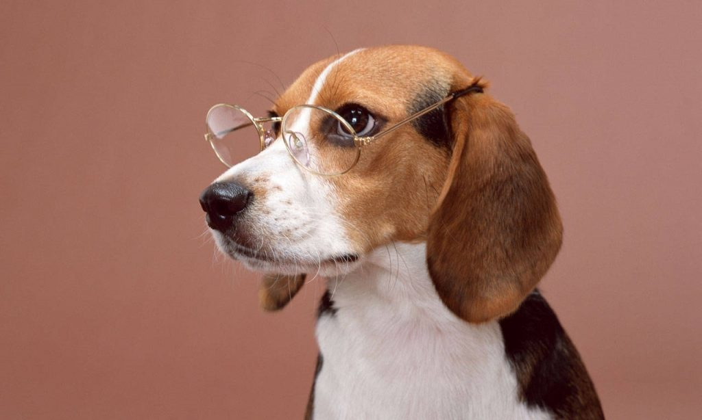
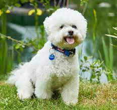
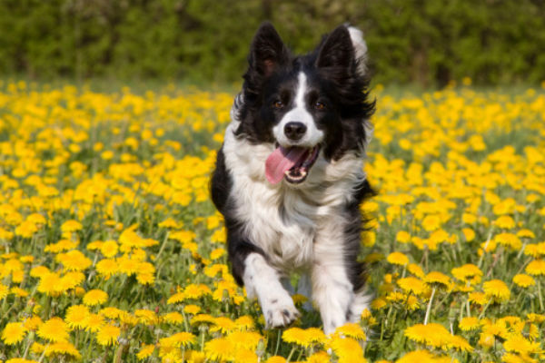
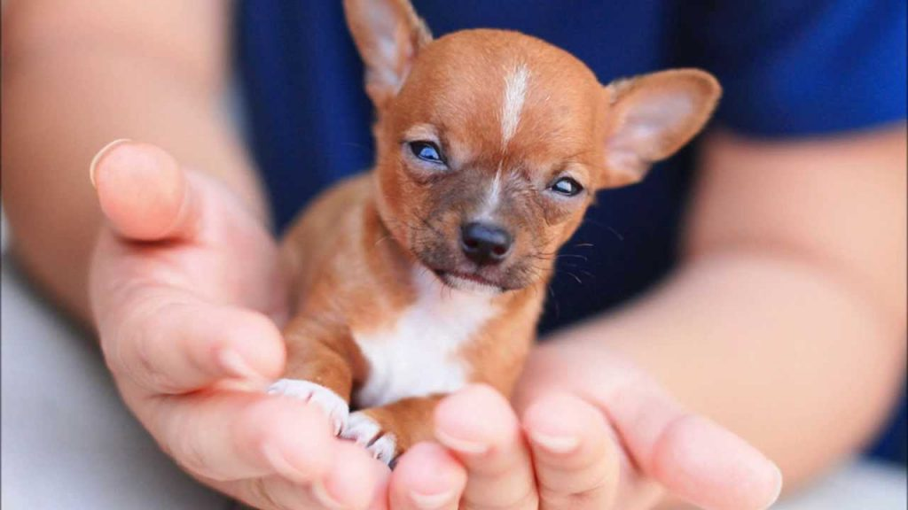
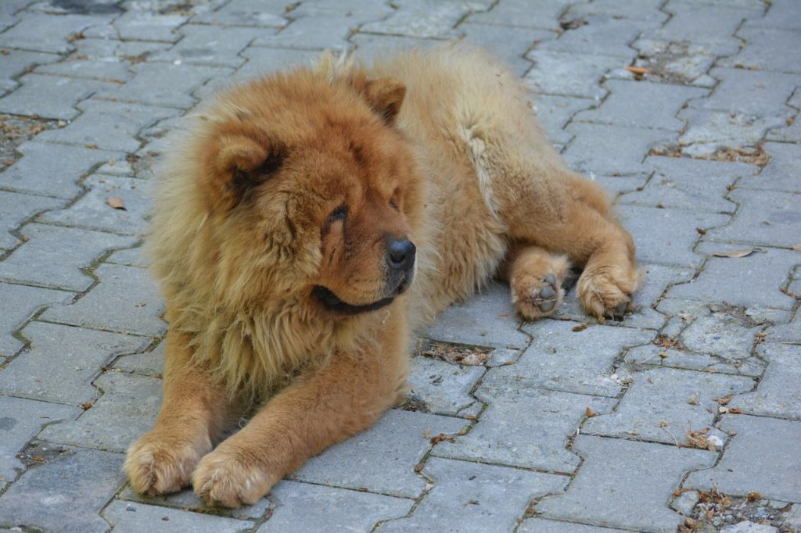
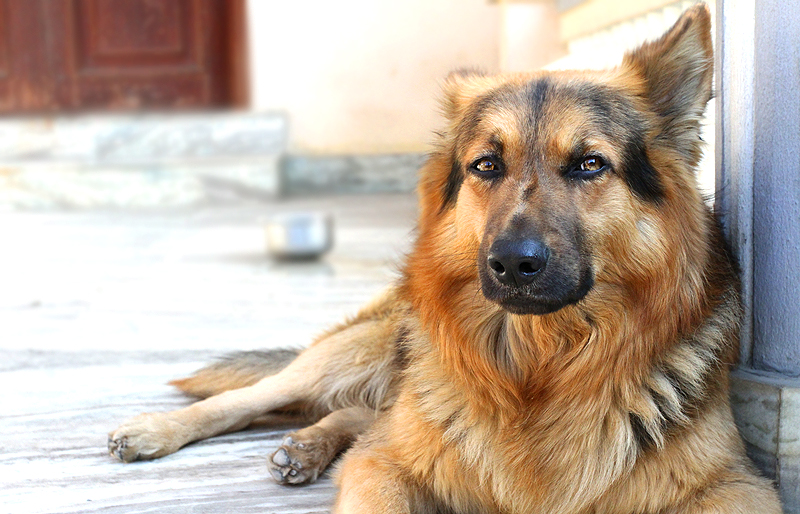
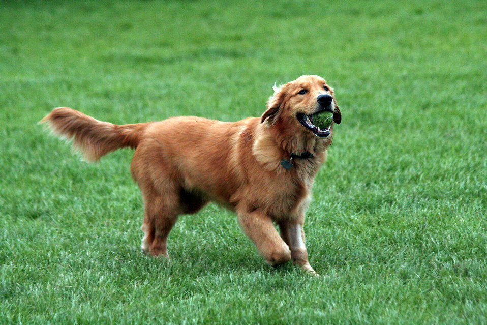
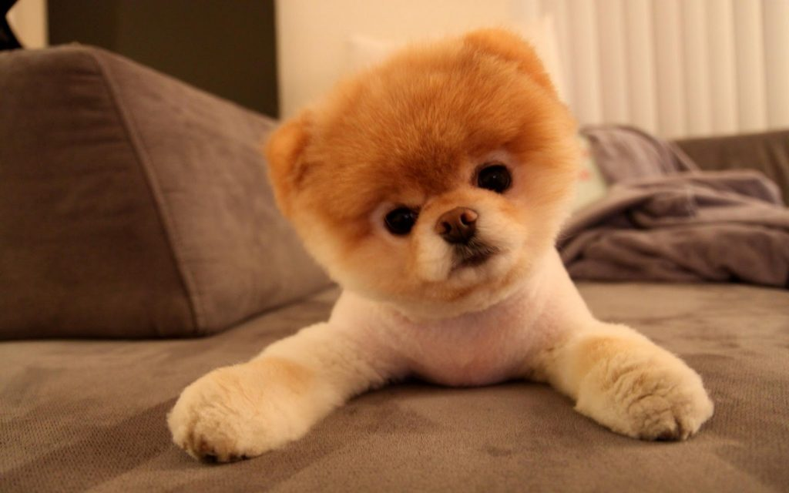

| Image |
Breed |
Misconceptions |
Traits |
Description |
|  |
Beagle |
Old |
Athletic & Funny |
Do seek an athletic and funny dog? A beagle may be it. Get your real life Snoopy now. |
|  |
Bichon Frise |
Big |
Small to Medium |
Want to keep a dog that can live in small spaces? A bichon frise is the one for you. It can live in your tiny apartment as long as you play and exercise. |
|  |
Border Collie |
Lazy |
Hardworking |
Job searching? This dog likes to work too! If you train it well, it will certainly love you. |
|  |
Chihuahua |
Silent |
Sassy |
Do not believe that a small dog can have a big attitude? A chihuahua is the sassiest dog you could get. |
|  |
Chowchow |
Loud |
Cute |
Have you ever seen a big bear-like and lion-looking dog on social media? That is a chowchow. Don't get fooled by its appearance. Despite its cute and cuddly appearance, it is quite aggresive for unexperienced handlers. |
|  |
German Shepherd |
Scary |
Loyal |
Are loyalty and faith the biggest factors for you? If so, a German shepherd is the perfect fit. This dog is known for its loyalty and faithfulness to its owner. Please note that, if you wish to adopt a senior K-9, review your environment and experience. |
|  |
Golden Retriever |
Shy |
Outgoing |
Is happiness important? Yes, a golden retriever provides it. This dog is known for its friendliness towards humans and other dogs. It is preferrable if you have kids in your household to secure a playmate. |
 |
Poodle |
Serious |
Graceful |
Luxury is classic. A poodle is a graceful companion that varies in size. |
|  |
Pomeranian |
Timid |
Courageous |
Chowchows are not the only bear-like dogs. A pomeranian is too, yet smaller. It may look shy and silent, but it can speak up for itself. |
 |
Pug |
Agressive |
Calm |
Like proving others that they are wrong? A pug is deemed to be agressive. However, it is not! What are you waiting for? Get the calmest and cuddliest dog. |